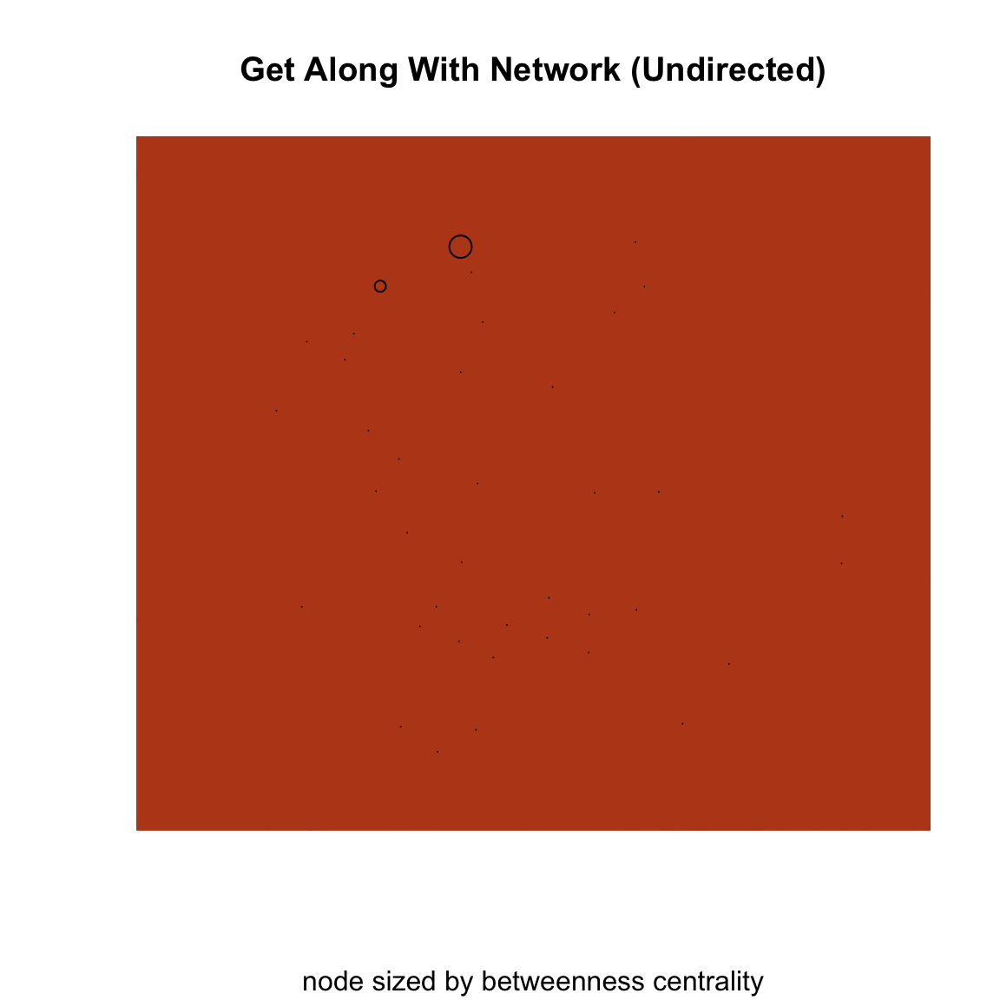
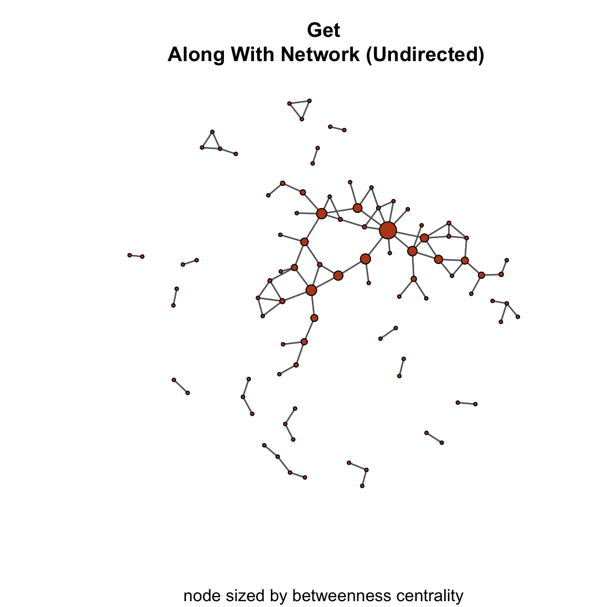

# set up the matrix
u_mat <- rbind(
c( 0,1,0,0,0 ),
c( 1,0,1,0,0 ),
c( 0,1,0,1,1 ),
c( 0,0,1,0,1 ),
c( 0,0,1,1,0 ))
# now set the names
mat_names <- c( "Jen","Tom","Bob","Leaf","Jim" )
rownames( u_mat ) <- mat_names
colnames( u_mat ) <- mat_names
# define the number of nodes in the graph
g <- dim( u_mat )[1]Betweenness Centrality and Centralization
How do we know whether a node is important in a network? As was discussed at the beginning of the chapter on Degree Centrality, one of the most popular concepts in network analysis is centrality. In that lecture, we covered how centrality can be measured by the number of edges incident on a node. Then, in the chapter on Closeness Centrality, we discussed an alternative conceptualization, closeness, where important nodes are those who are “close” to other nodes in the network. Finally, in the Betweenness Centrality chapter we covered a final conceptualization, betweenness, where important nodes are those that occupy positions between other nodes.
In this tutorial, we will examine how to calculate betweenness centrality and centralization scores in R using the betweenness() and centralization() functions in the sna package.
Betweenness Centrality (Undirected Binary Graphs)
Betweenness centrality is based on the number of shortest paths between j and k that actor i resides on.
Betweenness centrality is calculated as:
\[C_B(n_i) = \sum\limits_{j<k} g_{jk}(n_i) / g_{jk}\]
Where \(g_{jk}\) represents the number of geodesics linking j to k and \(g_{jk}(n_i)\) is the number of geodesics linking j and k that contain i. So, betweenness centrality is the ratio of the geodesics between j and k that contain i to the geodesics between j and k that do not contain i.
The standardized betweenness centrality score is calculated by:
\[C'_B(n_i) = \frac{\sum\limits_{j<k} g_{jk}(n_i) / g_{jk}}{[(g-1)(g-2)/2]}\]
The difference here is that we are dividing by \((g-1)(g-2)/2\) which is the number of pairs of actors not including i.
Using the sna Package
Let’s go ahead and set up a simple matrix and see how we use can calculate betweenness centrality using the betweenness() function in the sna package:
Now, let’s take a look at the betweenness() function:
?betweenness
# raw
betweenness( u_mat, gmode="graph" )[1] 0 3 4 0 0# standardized
betweenness( u_mat, gmode="graph" ) / ( ( ( g-1 ) * ( g-2 ) ) / 2 )[1] 0.0000000 0.5000000 0.6666667 0.0000000 0.0000000Now, let’s plot the graph so we can visualize what the betweenness score is showing. To make it easier to see, let’s add the betweenness centrality info to the labels and size the nodes by betweenness centrality. That will make it easier to visualize.
# create an object that is the scores
node_betweenness <- betweenness( u_mat,gmode="graph" )
# create a vector of labels that combines the name with the betweeness scores
# use the paste() function to put characters and numbers together
names_between <- paste(
mat_names, # the names of the vertices
", ", # add a comma to separate name from degree
round( node_betweenness, 0 ), # add the rounded distance
sep = "" ) # remove the space between the two inputs
# set the seed to reproduce the same layout
set.seed( 507 )
# render the plot
gplot(
u_mat,
gmode = "graph",
label = names_between,
label.cex = 0.6,
vertex.col = "lightblue"
)In this plot, we see that Tom and Bob both have scores of 3 and 4, respectively, whereas Jen, Leaf, and Jim have scores of 0. Why do Jen, Leaf, and Jim have scores of 0? Because nobody has to go “between” them to reach other nodes.
Betweenness Centralization
We can also summarize the entire network, in terms of betweenness. Group betweenness centralization tells us how much variation there is in the betweenness scores. As we saw in the chapters on Degree Centrality and Closeness Centrality, this measure is bound between 0 and 1 where a value of 0 indicates complete uniformity across nodes in their centrality scores and a value of 1 indicates that one node has the highest possible centrality score, and all others are at the minimum.
For betweenness centrality, this is calculated as:
\[C_B = \frac{\sum\limits_{i=1}^g[C'_B(n^*)-C'_B(n_i)]}{(g-1)}\]
Where \(C'_B(n^*)\) is the maximum or largest standardized betweenness centrality score. To calculate the group betweenness centrality, we can use the centralization() function in sna and specify betweenness in the FUN argument.
?centralization
centralization( u_mat, betweenness, mode="graph" )[1] 0.5416667What does the centralization score of 0.54 tell us?
Betweenness Centrality (Directed Binary Graphs)
As with undirected graphs, we can calculate betweenness centrality scores for directed graphs. In a directed binary graph, betweenness centrality has the same interpretation, but it takes into account the directional nature of the graph.
For example, consider two scenarios:
- Suppose Laura sends a tie to Miguel and he sends a tie to Bruce (i.e. Laura -> Miguel -> Bruce). Here, Miguel is between Laura and Bruce and has a betweeness score of 1.
- Now suppose Laura sends a tie to Miguel and Bruce sends a tie to Miguel (i.e. Laura -> Miguel <- Bruce).
- Is Miguel between Laura and Bruce now?
Let’s take a look at this using the network from the Betweenness Centrality chapter.
# build the matrix
d_mat <- rbind(
c(0,1,0,0,0),
c(0,0,1,0,0),
c(0,0,0,1,1),
c(0,0,1,0,1),
c(0,0,1,1,0)
)
# attach the names
rownames( d_mat ) <- c( "Jen","Tom","Bob","Leaf","Jim" )
colnames( d_mat ) <- c( "Jen","Tom","Bob","Leaf","Jim" )Now, let’s use the same code we used above to calculate the betweenness centrality scores. Note, however, that we have to change the gmode= argument in the betweenness() and centralization() functions to be digraph since the graph is directed and we want to include the information on directionality in the calculations (recall that for undirected graphs we use graph).
# define the number of nodes in the graph for our calculation
g <- dim( d_mat )[1]
# unstandardized
betweenness( d_mat, gmode="digraph" )[1] 0 3 4 0 0# standardized
betweenness( d_mat, gmode="digraph" ) / ( ( ( g-1 ) * ( g-2 ) ) / 2 )[1] 0.0000000 0.5000000 0.6666667 0.0000000 0.0000000Let’s plot this to better visualize the scores:
# create an object that is the scores
node_betweenness <- betweenness( d_mat, gmode="digraph" )
# create a vector of labels that combines the name with the betweeness scores
# use the paste() function to put characters and numbers together
names_between <- paste(
mat_names, # the names of the vertices
", ", # add a comma to separate name from degree
round( node_betweenness, 0 ), # add the rounded distance
sep = "" ) # remove the space between the two inputs
# set the seed to reproduce the same layout
set.seed( 507 )
# render the plot
gplot(
d_mat,
gmode = "digraph",
label = names_between,
label.cex = 0.6,
arrowhead.cex = 0.5,
vertex.col = "#2e5087"
)Finally, let’s examine the betweenness centralization score:
# Group Betweenness Centralization.
centralization( d_mat, betweenness, mode="digraph" ) [1] 0.2708333What does the centralization score of 0.27 tell us?
Compare the centralization score of 0.54 for the undirected graph above and the centralization score of 0.27 for the directed graph we just calculated.
Bonus question: Which one is larger? What does the difference in the values mean in terms of how betweenness scores are distributed in the graph?
Betweenness Centrality in PINS Get Along With Network
The Prison Inmate Networks Study (PINS) examines the social networks of prison inmates in a state correctional institution. The study was unique in that it was the first in nearly a century to collection sociometric data in a prison. The researchers collected data on several types of networks. There are two we want to look at here:
The get along with network was created by asking individuals whom they “get along with” on the unit. We can think of this as “friends” in a prison setting. (People don’t really have “friends” in prison, but there are people they “get along with”)
The power and influence network was created by asking individuals whom they believed was “powerful and influential” on the unit.
Let’s examine the betweenness centrality scores for both of these networks.
Get Along with Network (Undirected Network)
For the get along with network, individuals could have asymmetric nominations. That is, i could nominate j and j didn’t necessarily nominate i. But, we are going to symmetrize the network by only taking ties for which both i and j indicated that the get along with the other person. This will give us an undirected network.
# set the location for the file
loc <- "https://github.com/jacobtnyoung/snaca-r/raw/main/data/data-PINS-getalong-w1-adj.csv"
# read in the .csv file
ga_mat <- as.matrix(
read.csv(
loc,
as.is = TRUE,
header = TRUE,
row.names = 1
)
)
# use the symmetrize() function to create an undirected matrix
ga_mat_u <- symmetrize( ga_mat, rule = "strong" )Now, let’s calculate our betweenness scores:
# define the number of nodes in the graph for our calculation
g <- dim( ga_mat_u )[1]
# unstandardized
betweenness( ga_mat_u, gmode="graph" ) [1] 0.000000 0.000000 0.000000 140.000000 0.000000 0.000000
[7] 0.000000 0.000000 0.000000 0.000000 0.000000 0.000000
[13] 94.000000 0.000000 0.000000 0.000000 291.866667 0.000000
[19] 0.000000 0.000000 0.000000 0.000000 0.000000 0.000000
[25] 0.000000 0.000000 0.000000 0.000000 0.000000 0.000000
[31] 0.000000 0.000000 0.000000 0.000000 0.000000 0.000000
[37] 0.000000 0.000000 0.000000 242.666667 48.000000 86.216667
[43] 209.966667 1.000000 0.000000 237.333333 335.366667 0.000000
[49] 0.000000 0.000000 0.000000 0.000000 0.000000 0.000000
[55] 0.000000 27.200000 0.000000 0.000000 0.000000 0.000000
[61] 0.000000 51.516667 0.000000 0.000000 0.000000 0.000000
[67] 19.166667 16.700000 140.000000 141.150000 0.000000 0.000000
[73] 0.000000 0.000000 0.000000 0.000000 1.000000 0.000000
[79] 0.000000 0.000000 0.000000 0.000000 0.000000 0.000000
[85] 0.000000 2.000000 0.000000 0.000000 0.000000 0.000000
[91] 0.000000 0.000000 0.000000 0.000000 180.000000 4.033333
[97] 0.000000 0.000000 0.000000 3.000000 0.000000 48.000000
[103] 0.000000 48.000000 0.000000 0.000000 0.000000 272.200000
[109] 0.000000 0.000000 0.000000 0.000000 0.000000 0.000000
[115] 0.000000 0.000000 0.000000 0.000000 2.000000 0.000000
[121] 0.000000 358.733333 0.000000 0.000000 26.166667 0.000000
[127] 3.983333 0.000000 39.200000 0.000000 0.000000 0.000000
[133] 0.000000 0.000000 0.000000 0.000000 0.000000 0.000000
[139] 0.000000 0.000000 0.000000 0.000000 0.000000 0.000000
[145] 0.000000 0.000000 0.000000 19.166667 0.000000 0.000000
[151] 11.000000 0.000000 0.000000 0.000000 681.733333 0.000000
[157] 0.000000 302.000000 0.000000 0.000000 0.000000 95.000000
[163] 343.966667 0.000000 0.000000 184.666667 0.000000 0.000000
[169] 0.000000 0.000000 0.000000 0.000000 0.000000 2.000000
[175] 0.000000 0.000000 0.000000 0.000000 0.000000 0.000000
[181] 0.000000 0.000000 0.000000 0.000000 0.000000 0.000000
[187] 0.000000 0.000000 0.000000 0.000000 0.000000 0.000000
[193] 1.000000 0.000000 0.000000 0.000000 0.000000 0.000000
[199] 0.000000 0.000000 0.000000 0.000000 0.000000 0.000000
[205] 0.000000# standardized
betweenness( ga_mat_u, gmode="graph" ) / ( ( ( g-1 ) * ( g-2 ) ) / 2 ) [1] 0.000000e+00 0.000000e+00 0.000000e+00 6.761325e-03 0.000000e+00
[6] 0.000000e+00 0.000000e+00 0.000000e+00 0.000000e+00 0.000000e+00
[11] 0.000000e+00 0.000000e+00 4.539747e-03 0.000000e+00 0.000000e+00
[16] 0.000000e+00 1.409575e-02 0.000000e+00 0.000000e+00 0.000000e+00
[21] 0.000000e+00 0.000000e+00 0.000000e+00 0.000000e+00 0.000000e+00
[26] 0.000000e+00 0.000000e+00 0.000000e+00 0.000000e+00 0.000000e+00
[31] 0.000000e+00 0.000000e+00 0.000000e+00 0.000000e+00 0.000000e+00
[36] 0.000000e+00 0.000000e+00 0.000000e+00 0.000000e+00 1.171963e-02
[41] 2.318169e-03 4.163849e-03 1.014038e-02 4.829518e-05 0.000000e+00
[46] 1.146206e-02 1.619659e-02 0.000000e+00 0.000000e+00 0.000000e+00
[51] 0.000000e+00 0.000000e+00 0.000000e+00 0.000000e+00 0.000000e+00
[56] 1.313629e-03 0.000000e+00 0.000000e+00 0.000000e+00 0.000000e+00
[61] 0.000000e+00 2.488007e-03 0.000000e+00 0.000000e+00 0.000000e+00
[66] 0.000000e+00 9.256576e-04 8.065295e-04 6.761325e-03 6.816865e-03
[71] 0.000000e+00 0.000000e+00 0.000000e+00 0.000000e+00 0.000000e+00
[76] 0.000000e+00 4.829518e-05 0.000000e+00 0.000000e+00 0.000000e+00
[81] 0.000000e+00 0.000000e+00 0.000000e+00 0.000000e+00 0.000000e+00
[86] 9.659036e-05 0.000000e+00 0.000000e+00 0.000000e+00 0.000000e+00
[91] 0.000000e+00 0.000000e+00 0.000000e+00 0.000000e+00 8.693132e-03
[96] 1.947906e-04 0.000000e+00 0.000000e+00 0.000000e+00 1.448855e-04
[101] 0.000000e+00 2.318169e-03 0.000000e+00 2.318169e-03 0.000000e+00
[106] 0.000000e+00 0.000000e+00 1.314595e-02 0.000000e+00 0.000000e+00
[111] 0.000000e+00 0.000000e+00 0.000000e+00 0.000000e+00 0.000000e+00
[116] 0.000000e+00 0.000000e+00 0.000000e+00 9.659036e-05 0.000000e+00
[121] 0.000000e+00 1.732509e-02 0.000000e+00 0.000000e+00 1.263724e-03
[126] 0.000000e+00 1.923758e-04 0.000000e+00 1.893171e-03 0.000000e+00
[131] 0.000000e+00 0.000000e+00 0.000000e+00 0.000000e+00 0.000000e+00
[136] 0.000000e+00 0.000000e+00 0.000000e+00 0.000000e+00 0.000000e+00
[141] 0.000000e+00 0.000000e+00 0.000000e+00 0.000000e+00 0.000000e+00
[146] 0.000000e+00 0.000000e+00 9.256576e-04 0.000000e+00 0.000000e+00
[151] 5.312470e-04 0.000000e+00 0.000000e+00 0.000000e+00 3.292443e-02
[156] 0.000000e+00 0.000000e+00 1.458514e-02 0.000000e+00 0.000000e+00
[161] 0.000000e+00 4.588042e-03 1.661193e-02 0.000000e+00 0.000000e+00
[166] 8.918510e-03 0.000000e+00 0.000000e+00 0.000000e+00 0.000000e+00
[171] 0.000000e+00 0.000000e+00 0.000000e+00 9.659036e-05 0.000000e+00
[176] 0.000000e+00 0.000000e+00 0.000000e+00 0.000000e+00 0.000000e+00
[181] 0.000000e+00 0.000000e+00 0.000000e+00 0.000000e+00 0.000000e+00
[186] 0.000000e+00 0.000000e+00 0.000000e+00 0.000000e+00 0.000000e+00
[191] 0.000000e+00 0.000000e+00 4.829518e-05 0.000000e+00 0.000000e+00
[196] 0.000000e+00 0.000000e+00 0.000000e+00 0.000000e+00 0.000000e+00
[201] 0.000000e+00 0.000000e+00 0.000000e+00 0.000000e+00 0.000000e+00Let’s create a plot that has the nodes sized by their betweenness centrality score.
gplot(
ga_mat_u,
gmode = "graph",
edge.col="grey40",
vertex.col="#ba491c",
vertex.cex = betweenness( ga_mat_u, gmode="graph" ),
main = "Get Along With Network (Undirected)",
sub = "node sized by betweenness centrality"
)
Wait? Something isn’t right…All I see is a blob of color. This is because the size of the nodes in the plot are HUGE! We can see this by using the max() function. The max() function finds the maximum value of a vector:
max( betweenness( ga_mat_u, gmode="graph" ) )[1] 681.7333The largest betweenness centrality score is 681.7333333, so the plot is using this value. What we need is to adjust the centrality scores so that they are not so large. Fortunately, there is a simple function we can write to do this.
Let’s use the rescale() function to adjust the node sizes in our plot:
rescale <- function( nchar, low, high ){
min_d <- min( nchar )
max_d <- max( nchar )
rscl <- ( ( high - low )*( nchar - min_d ) ) / ( max_d - min_d ) + low
rscl
}Now, use the function we created to rescale the size of the nodes:
gplot(
ga_mat_u,
gmode = "graph",
edge.col="grey40",
vertex.col="#ba491c",
vertex.cex = rescale( betweenness( ga_mat_u, gmode="graph" ), 0.5, 2.5 ),
main = "Get\n Along With Network (Undirected)",
sub = "node sized by betweenness centrality"
)
Much better. Yet, it is still a bit difficult to see the differences due to the number of isolates (i.e. nodes without any edges). Let’s remove them using the displayisolates = argument. We will set it to FALSE to not display nodes that are isolates.
gplot(
ga_mat_u,
gmode = "graph",
edge.col="grey40",
vertex.col="#ba491c",
vertex.cex = rescale( betweenness( ga_mat_u, gmode="graph" ), 0.5, 2.5 ),
main = "Get\n Along With Network (Undirected)",
sub = "node sized by betweenness centrality",
displayisolates = FALSE # here we set it to FALSE, TRUE is the default
)
Now we can examine the centralization score for the network:
centralization( ga_mat_u, betweenness, mode="graph" ) [1] 0.03197054What does the centralization score of 0.03 tell us?
Power and Influence Network (Directed Network)
For the power and influence network, individuals could have asymmetric nominations. That is, i could nominate j and j didn’t necessarily nominate i. We will keep this asymmetry so that we can treat the network as directed.
# set the location for the file
loc <- "https://github.com/jacobtnyoung/snaca-r/raw/main/data/data-PINS-power-w1-adj.csv"
# read in the .csv file
pi_mat <- as.matrix(
read.csv(
loc,
as.is = TRUE,
header = TRUE,
row.names = 1
)
)We have created a directed network where ties represent “power and influence” nominations from i to j. Now, let’s calculate our betweenness scores.
# define the number of nodes in the graph for our calculation
g <- dim( pi_mat )[1]
# unstandardized
betweenness( pi_mat, gmode="digraph" ) [1] 9.0 0.0 0.0 59.5 0.0 0.0 0.0 0.0 0.0 0.0 0.0 0.0 0.0 0.0 0.0
[16] 0.0 0.0 0.0 0.0 0.0 0.0 0.0 0.0 0.0 7.0 0.0 0.0 0.0 0.0 0.0
[31] 0.0 0.0 0.0 0.0 0.0 0.0 0.0 0.0 0.0 7.0 0.0 0.0 0.0 0.0 0.0
[46] 49.5 5.0 0.0 0.0 0.0 0.0 0.0 0.0 0.0 0.0 0.0 0.0 0.0 0.0 0.0
[61] 0.0 0.0 0.0 0.0 0.0 0.0 28.5 0.0 0.0 0.0 0.0 0.0 0.0 0.0 0.0
[76] 0.0 0.0 0.0 0.0 0.0 3.0 0.0 0.0 0.0 0.0 0.0 0.0 0.0 0.0 0.0
[91] 0.0 0.0 0.0 0.0 0.0 0.0 0.0 19.0 0.0 0.0 0.0 2.0 0.0 0.0 0.0
[106] 0.0 0.0 4.0 0.0 6.0 0.0 0.0 0.0 0.0 0.0 0.0 0.0 0.0 12.0 0.0
[121] 2.0 7.0 0.0 0.0 0.0 0.0 0.0 0.0 5.5 1.5 0.0 0.0 0.0 1.0 0.0
[136] 0.0 0.0 0.0 0.0 0.0 0.0 0.0 0.0 0.0 0.0 0.0 0.0 10.0 0.0 0.0
[151] 0.0 0.0 5.0 0.0 0.0 4.0 0.0 0.0 0.0 0.0 0.0 7.5 0.0 0.0 0.0
[166] 51.0 0.0 0.0 0.0 0.0 0.0 0.0 0.0 0.0 0.0 0.0 4.0 0.0 0.0 0.0
[181] 0.0 0.0 0.0 0.0 0.0 0.0 77.0 0.0 0.0 0.0 0.0 0.0 0.0 0.0 0.0
[196] 0.0 0.0 0.0 0.0 0.0 0.0 0.0 0.0 0.0 0.0# standardized
betweenness( pi_mat, gmode="digraph" ) / ( ( ( g-1 ) * ( g-2 ) ) / 2 ) [1] 4.346566e-04 0.000000e+00 0.000000e+00 2.873563e-03 0.000000e+00
[6] 0.000000e+00 0.000000e+00 0.000000e+00 0.000000e+00 0.000000e+00
[11] 0.000000e+00 0.000000e+00 0.000000e+00 0.000000e+00 0.000000e+00
[16] 0.000000e+00 0.000000e+00 0.000000e+00 0.000000e+00 0.000000e+00
[21] 0.000000e+00 0.000000e+00 0.000000e+00 0.000000e+00 3.380663e-04
[26] 0.000000e+00 0.000000e+00 0.000000e+00 0.000000e+00 0.000000e+00
[31] 0.000000e+00 0.000000e+00 0.000000e+00 0.000000e+00 0.000000e+00
[36] 0.000000e+00 0.000000e+00 0.000000e+00 0.000000e+00 3.380663e-04
[41] 0.000000e+00 0.000000e+00 0.000000e+00 0.000000e+00 0.000000e+00
[46] 2.390611e-03 2.414759e-04 0.000000e+00 0.000000e+00 0.000000e+00
[51] 0.000000e+00 0.000000e+00 0.000000e+00 0.000000e+00 0.000000e+00
[56] 0.000000e+00 0.000000e+00 0.000000e+00 0.000000e+00 0.000000e+00
[61] 0.000000e+00 0.000000e+00 0.000000e+00 0.000000e+00 0.000000e+00
[66] 0.000000e+00 1.376413e-03 0.000000e+00 0.000000e+00 0.000000e+00
[71] 0.000000e+00 0.000000e+00 0.000000e+00 0.000000e+00 0.000000e+00
[76] 0.000000e+00 0.000000e+00 0.000000e+00 0.000000e+00 0.000000e+00
[81] 1.448855e-04 0.000000e+00 0.000000e+00 0.000000e+00 0.000000e+00
[86] 0.000000e+00 0.000000e+00 0.000000e+00 0.000000e+00 0.000000e+00
[91] 0.000000e+00 0.000000e+00 0.000000e+00 0.000000e+00 0.000000e+00
[96] 0.000000e+00 0.000000e+00 9.176084e-04 0.000000e+00 0.000000e+00
[101] 0.000000e+00 9.659036e-05 0.000000e+00 0.000000e+00 0.000000e+00
[106] 0.000000e+00 0.000000e+00 1.931807e-04 0.000000e+00 2.897711e-04
[111] 0.000000e+00 0.000000e+00 0.000000e+00 0.000000e+00 0.000000e+00
[116] 0.000000e+00 0.000000e+00 0.000000e+00 5.795422e-04 0.000000e+00
[121] 9.659036e-05 3.380663e-04 0.000000e+00 0.000000e+00 0.000000e+00
[126] 0.000000e+00 0.000000e+00 0.000000e+00 2.656235e-04 7.244277e-05
[131] 0.000000e+00 0.000000e+00 0.000000e+00 4.829518e-05 0.000000e+00
[136] 0.000000e+00 0.000000e+00 0.000000e+00 0.000000e+00 0.000000e+00
[141] 0.000000e+00 0.000000e+00 0.000000e+00 0.000000e+00 0.000000e+00
[146] 0.000000e+00 0.000000e+00 4.829518e-04 0.000000e+00 0.000000e+00
[151] 0.000000e+00 0.000000e+00 2.414759e-04 0.000000e+00 0.000000e+00
[156] 1.931807e-04 0.000000e+00 0.000000e+00 0.000000e+00 0.000000e+00
[161] 0.000000e+00 3.622139e-04 0.000000e+00 0.000000e+00 0.000000e+00
[166] 2.463054e-03 0.000000e+00 0.000000e+00 0.000000e+00 0.000000e+00
[171] 0.000000e+00 0.000000e+00 0.000000e+00 0.000000e+00 0.000000e+00
[176] 0.000000e+00 1.931807e-04 0.000000e+00 0.000000e+00 0.000000e+00
[181] 0.000000e+00 0.000000e+00 0.000000e+00 0.000000e+00 0.000000e+00
[186] 0.000000e+00 3.718729e-03 0.000000e+00 0.000000e+00 0.000000e+00
[191] 0.000000e+00 0.000000e+00 0.000000e+00 0.000000e+00 0.000000e+00
[196] 0.000000e+00 0.000000e+00 0.000000e+00 0.000000e+00 0.000000e+00
[201] 0.000000e+00 0.000000e+00 0.000000e+00 0.000000e+00 0.000000e+00Now, we can plot it to examine the scores:
gplot(
pi_mat,
gmode = "digraph",
edge.col="grey40",
vertex.col="#0b7344",
vertex.cex = rescale( betweenness( pi_mat, gmode="digraph" ), 0.5, 2.5 ),
arrowhead.cex = 0.5,
main = "Power/Influence Network (Directed)",
sub = "node sized by betweenness centrality"
)
Again, let’s remove the isolates:
gplot(
pi_mat,
gmode = "digraph",
edge.col="grey40",
vertex.col="#0b7344",
vertex.cex = rescale( betweenness( pi_mat, gmode="digraph" ), 0.5, 2.5 ),
arrowhead.cex = 0.5,
main = "Power/Influence Network (Directed)",
sub = "node sized by betweenness centrality",
displayisolates = FALSE
)
Examine the centralization score for the network:
centralization( pi_mat, betweenness, mode="digraph" ) [1] 0.00182267A few questions:
- What do we see in the plot?
- What does the closeness centralization score of 0.0018 indicate?
Test Your Knowledge Excercises
- Define betweenness centrality and explain its importance in network analysis.
- Modify the matrix
u_matto include a new node and recalculate the betweenness centrality scores. How do the scores change? - For the directed graph
d_mat, calculate the betweenness centrality and plot the graph. How does the directionality affect the results? - Compare the centralization scores of
u_mat(undirected) andd_mat(directed). What does the difference indicate about the distribution of betweenness scores? - Visualize the “Power and Influence Network” as a directed graph with node sizes proportional to their betweenness centrality scores. Describe key observations from the plot.
- Discuss the implications of removing isolates from a network visualization using the “Get Along With Network” as an example.
- Explain the meaning of the betweenness centralization score for the “Power and Influence Network” and how it compares to the betweenness centralization score for the “Get Along With Network”.
- Interpret the maximum betweenness centrality score for the “Get Along With Network” and discuss its implications for network structure. Do the same for the “Power and Influence Network”.
Tutorial Summary
This tutorial introduced the concept of betweenness centrality and centralization and how it can be calculated using the betweenness() function in the sna package in R., key measures in social network analysis used to identify important nodes in a network based on their intermediary roles. We reviewed this calculation for both undirected and directed networks, illustrating how directionality influences betweenness scores and centralization metrics.These exercises demonstrated how betweenness centrality and centralization provide valuable insights into social dynamics and power structures within criminal justice contexts.